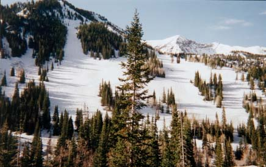
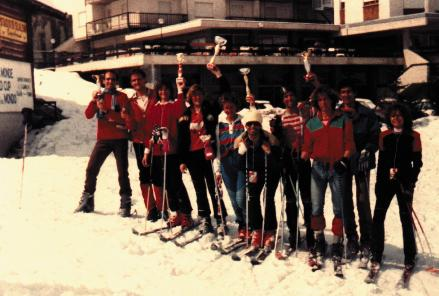
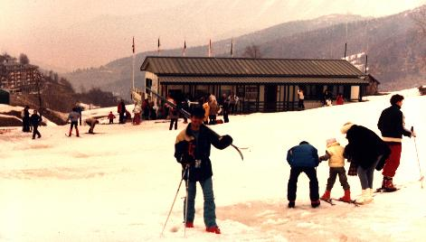
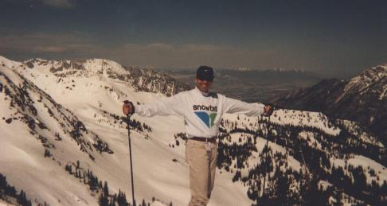
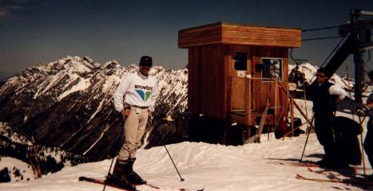
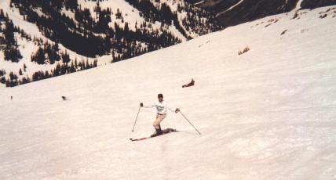

Aziz Alaoui's home page
Aziz Alaoui's home page

Snowbird

Skiing party organized by the NUC-ski (Nice university club) at Limone (3 amis), Italy, on Feb, 1985

Me at Limone (3 amis), Italy, on Feb, 1986
![[IMAGE]](azizfoto2.jpg)
Me at Snowbird, S.L.City, 5th SIAM Conf. on Applic. of Dynamical Systems, May, 1999

Me at Snowbird, May, 1999

Me at Snowbird, May, 1999

Me at Snowbird, May, 1999